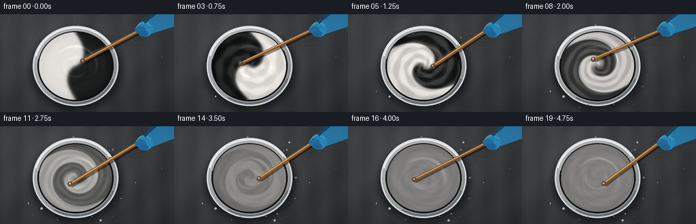
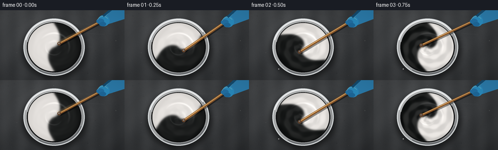

CODING AGENTS AS PIXEL WORLD MODELS
traex/GPT-5.6-Sol · material_0001
点击播放 · 原生 RGB 像素
逐轮保存的候选
回放视频、检查图与代码变化。
每份候选均可单独播放。实际图片检查记录在下方工具轨迹中。
候选 01播放与检查图
点击播放 · 原生 RGB 像素


展开代码变化
--- 上一保存版本
+++ 本次保存版本
@@ -0,0 +1,184 @@
+from pathlib import Path
+import json, math
+import numpy as np
+from PIL import Image, ImageDraw, ImageFilter
+import artifact_io
+
+# Deterministic, entirely procedural rendering of a top-down paint-mixing scene.
+CASE = Path(__file__).resolve().parent
+SPEC = json.loads((CASE / 'task_spec.json').read_text())
+W, H, N = SPEC['width'], SPEC['height'], SPEC['frames']
+S = 3
+w, h = W*S, H*S
+rng = np.random.default_rng(2077)
+
+def sc(v): return int(round(v*S))
+def pts(seq): return [(sc(x), sc(y)) for x,y in seq]
+def smoothstep(a,b,x):
+ z=np.clip((x-a)/(b-a),0,1)
+ return z*z*(3-2*z)
+
+def make_background():
+ yy,xx=np.mgrid[0:h,0:w]
+ # Cool charcoal worktop, softly lit from upper left.
+ radial=np.sqrt(((xx/S-68)/260)**2+((yy/S-22)/170)**2)
+ base=42 + 25*np.clip(1-radial,0,1)
+ grain=(3*np.sin(xx/17.0)+2*np.sin((xx+yy)/39.0)+rng.normal(0,1.7,(h,w)))
+ rgb=np.empty((h,w,3),dtype=np.float32)
+ rgb[...,0]=base+grain+4
+ rgb[...,1]=base+grain+6
+ rgb[...,2]=base+grain+8
+ im=Image.fromarray(np.uint8(np.clip(rgb,0,255)),'RGB')
+ # understated scratches and dried paint specks
+ d=ImageDraw.Draw(im,'RGBA')
+ for _ in range(25):
+ x=float(rng.uniform(4,W-4)); y=float(rng.uniform(4,H-4)); r=float(rng.uniform(.25,1.1))
+ c=(205,205,198,int(rng.integers(20,55))) if rng.random()>.5 else (10,11,13,int(rng.integers(20,45)))
+ d.ellipse((sc(x-r),sc(y-r),sc(x+r),sc(y+r)),fill=c)
+ for _ in range(7):
+ x=float(rng.uniform(5,W-45)); y=float(rng.uniform(8,H-8)); ln=float(rng.uniform(15,55))
+ d.line((sc(x),sc(y),sc(x+ln),sc(y+rng.uniform(-2,2))),fill=(225,230,232,18),width=max(1,sc(.35)))
+ return im
+
+BG=make_background()
+CX,CY=111.0,76.0
+RX,RY=63.0,59.0
+IRX,IRY=54.0,50.0
+# Fixed specks ejected around the bowl; they appear progressively.
+specks=[]
+for i in range(18):
+ ang=rng.uniform(0,2*math.pi); rad=rng.uniform(67,91)
+ x=CX+rad*math.cos(ang); y=CY+.80*rad*math.sin(ang)
+ if 3<x<W-3 and 3<y<H-3:
+ specks.append((x,y,rng.uniform(.35,1.35),rng.uniform(.06,.66),rng.choice([-1,0,1])))
+
+def paint_texture(frame):
+ t=frame/(N-1)
+ yy,xx=np.mgrid[0:h,0:w]
+ X=(xx/S-CX)/IRX; Y=(yy/S-CY)/IRY
+ r=np.sqrt(X*X+Y*Y); th=np.arctan2(Y,X)
+ # Inverse-warp an initially equal black/white split into tightening spiral folds.
+ spin=1.15 + 9.4*smoothstep(0,.78,t)
+ adv=th - spin*(1-r)**1.35 - 2*math.pi*3.2*t
+ x0=r*np.cos(adv)
+ primary=np.tanh(-x0/(.055+.018*t))
+ # Secondary filaments become strongest midway through mixing.
+ fil=np.sin(3*adv + 12*r - 7.5*t) + .48*np.sin(7*adv-19*r+4*t)
+ fil=np.tanh(fil*1.45)
+ mid=math.sin(math.pi*min(1,t/.88))**1.25
+ scalar=np.clip(.84*primary + .26*mid*fil,-1,1)
+ # Black and white converge to neutral middle gray, fully blended at the end.
+ contrast=(1-smoothstep(.10,.89,t))**0.92
+ lum=128 + 116*contrast*scalar
+ # Subtle wet-paint body and moving streaks remain after color is blended.
+ wet=4.2*np.sin(18*r-3*th+11*t)+2.1*np.sin(35*r+6*th-17*t)
+ lum+=wet*(.30+.55*(1-contrast))
+ # Soft basin edge shading and glossy highlights.
+ lum-=10*np.clip((r-.76)/.24,0,1)
+ gloss=np.exp(-((r-.58)/.035)**2)*np.clip(np.cos(th+1.0),0,1)
+ gloss+=.62*np.exp(-((r-.32)/.024)**2)*np.clip(np.cos(th-2.0),0,1)
+ lum+=30*gloss
+ # A localized curved wake behind the stirring tip.
+ a=-.72 + 2*math.pi*4.25*t
+ wake=np.exp(-((r-.25)/.045)**2)*np.exp(-((np.angle(np.exp(1j*(th-a+1.0))))/.72)**2)
+ lum+=14*wake
+ # Slightly warm white paint and cool black reflections.
+ R=lum + 3.0*contrast*scalar + 2
+ G=lum + 1
+ B=lum - 2.0*contrast*scalar - 1
+ arr=np.dstack([R,G,B])
+ arr=np.uint8(np.clip(arr,0,255))
+ return Image.fromarray(arr,'RGB')
+
+def render(frame):
+ t=frame/(N-1)
+ im=BG.copy()
+ # bowl shadow
+ layer=Image.new('RGBA',(w,h),(0,0,0,0)); d=ImageDraw.Draw(layer,'RGBA')
+ d.ellipse((sc(CX-RX-4),sc(CY-RY+5),sc(CX+RX+6),sc(CY+RY+8)),fill=(0,0,0,125))
+ layer=layer.filter(ImageFilter.GaussianBlur(sc(5.0))); im=Image.alpha_composite(im.convert('RGBA'),layer)
+
+ # Brushed stainless-steel bowl body.
+ yy,xx=np.mgrid[0:h,0:w]; rr=np.sqrt(((xx/S-CX)/RX)**2+((yy/S-CY)/RY)**2)
+ theta=np.arctan2(yy/S-CY,xx/S-CX)
+ metal=151 + 34*np.clip(1-rr,0,1) + 19*np.cos(theta+2.35) + 5*np.sin(52*rr)
+ metal_rgb=np.dstack([metal+8,metal+10,metal+11])
+ alpha=(rr<=1).astype(np.uint8)*255
+ metal_im=Image.fromarray(np.uint8(np.clip(np.dstack([metal_rgb,alpha]),0,255)),'RGBA')
+ im=Image.alpha_composite(im,metal_im)
+
+ # Dark inner recess then wet paint surface.
+ draw=ImageDraw.Draw(im,'RGBA')
+ draw.ellipse((sc(CX-IRX-2),sc(CY-IRY-2),sc(CX+IRX+2),sc(CY+IRY+2)),fill=(17,18,19,235))
+ p=paint_texture(frame)
+ mask=Image.new('L',(w,h),0); md=ImageDraw.Draw(mask)
+ md.ellipse((sc(CX-IRX),sc(CY-IRY),sc(CX+IRX),sc(CY+IRY)),fill=255)
+ # slightly soft paint boundary
+ mask=mask.filter(ImageFilter.GaussianBlur(sc(.28)))
+ im.paste(p,(0,0),mask)
+
+ # Thick rim, edge highlights and small specular glints.
+ rim=Image.new('RGBA',(w,h),(0,0,0,0)); rd=ImageDraw.Draw(rim,'RGBA')
+ rd.ellipse((sc(CX-RX),sc(CY-RY),sc(CX+RX),sc(CY+RY)),outline=(235,240,242,205),width=sc(2.0))
+ rd.arc((sc(CX-RX+2),sc(CY-RY+2),sc(CX+RX-2),sc(CY+RY-2)),195,326,fill=(255,255,255,220),width=sc(2.0))
+ rd.arc((sc(CX-RX+3),sc(CY-RY+3),sc(CX+RX-3),sc(CY+RY-3)),20,122,fill=(88,92,96,210),width=sc(2.1))
+ rd.arc((sc(CX-IRX-2),sc(CY-IRY-2),sc(CX+IRX+2),sc(CY+IRY+2)),192,333,fill=(249,251,250,150),width=sc(1.0))
+ im=Image.alpha_composite(im,rim)
+
+ # Flying paint flecks emphasize vigorous agitation.
+ spl=Image.new('RGBA',(w,h),(0,0,0,0)); sd=ImageDraw.Draw(spl,'RGBA')
+ for x,y,r,born,col in specks:
+ if t>=born:
+ age=(t-born)/(1-born)
+ rr0=r*(.7+.45*min(age*5,1))
+ if col<0: c=(20,20,21,205)
+ elif col>0: c=(230,230,226,205)
+ else: c=(126,127,126,190)
+ sd.ellipse((sc(x-rr0),sc(y-rr0),sc(x+rr0),sc(y+rr0)),fill=c)
+ sd.ellipse((sc(x-rr0*.35),sc(y-rr0*.4),sc(x+rr0*.1),sc(y+rr0*.05)),fill=(255,255,255,100))
+ im=Image.alpha_composite(im,spl)
+
+ # Stirring stick and blue nitrile-gloved hand entering from upper-right.
+ a=-.72 + 2*math.pi*4.25*t
+ tip=(CX+14.0*math.cos(a), CY+11.0*math.sin(a))
+ grip=(207+2.4*math.sin(a*.7), 22+1.6*math.cos(a*.8))
+ tool=Image.new('RGBA',(w,h),(0,0,0,0)); td=ImageDraw.Draw(tool,'RGBA')
+ # motion ghosts for rapid action
+ for k,al in [(2,25),(1,48)]:
+ aa=a-k*.24
+ old=(CX+14*math.cos(aa),CY+11*math.sin(aa))
+ td.line(pts([grip,old]),fill=(232,190,126,al),width=sc(4.3))
+ # stick shadow and wooden stirrer
+ td.line(pts([(grip[0]+1.4,grip[1]+2), (tip[0]+1.7,tip[1]+2.2)]),fill=(0,0,0,105),width=sc(6.2))
+ td.line(pts([grip,tip]),fill=(139,86,40,255),width=sc(5.0))
+ td.line(pts([(grip[0]-.5,grip[1]-.4),(tip[0]-.5,tip[1]-.4)]),fill=(239,191,116,220),width=sc(1.3))
+ td.ellipse((sc(tip[0]-3.7),sc(tip[1]-3.7),sc(tip[0]+3.7),sc(tip[1]+3.7)),fill=(103,69,45,235))
+ td.ellipse((sc(tip[0]-1.7),sc(tip[1]-2.1),sc(tip[0]+1),sc(tip[1]+.6)),fill=(220,220,211,120))
+ # forearm, cuff, palm and fingers
+ hand_shift=1.5*math.sin(a)
+ td.polygon(pts([(256,-5),(228,-4),(211,13+hand_shift),(218,31+hand_shift),(256,18)]),fill=(44,125,173,255))
+ td.line(pts([(230,-2),(214,15+hand_shift),(220,29+hand_shift)]),fill=(103,192,226,210),width=sc(2))
+ td.ellipse((sc(201),sc(11+hand_shift),sc(225),sc(34+hand_shift)),fill=(42,139,190,255))
+ # curled gloved fingers around stick
+ td.ellipse((sc(198),sc(18+hand_shift),sc(214),sc(29+hand_shift)),fill=(34,112,164,255))
+ td.ellipse((sc(204),sc(25+hand_shift),sc(218),sc(34+hand_shift)),fill=(30,104,154,255))
+ td.arc((sc(200),sc(13+hand_shift),sc(223),sc(34+hand_shift)),195,330,fill=(120,211,236,190),width=sc(1.1))
+ # cuff
+ td.line(pts([(229,-2),(212,13+hand_shift)]),fill=(21,76,112,255),width=sc(5))
+ # slight blur only for translucent ghosts, retain crisp main tool
+ im=Image.alpha_composite(im,tool)
+
+ # overall photographic finishing: tiny vignette and downsample antialiasing
+ arr=np.asarray(im.convert('RGB')).astype(np.float32)
+ yy2,xx2=np.mgrid[0:h,0:w]
+ vig=1-.12*np.clip(((xx2-w/2)/(w*.72))**2+((yy2-h/2)/(h*.72))**2,0,1)
+ arr*=vig[...,None]
+ out=Image.fromarray(np.uint8(np.clip(arr,0,255))).resize((W,H),Image.Resampling.LANCZOS)
+ return np.asarray(out,dtype=np.uint8)
+
+def main():
+ frames=np.stack([render(i) for i in range(N)],axis=0)
+ artifact_io.save(frames,CASE)
+
+if __name__=='__main__':
+ main()
候选 02播放与检查图
点击播放 · 原生 RGB 像素
展开代码变化
--- 上一保存版本
+++ 本次保存版本
@@ -28,7 +28,7 @@
rgb[...,0]=base+grain+4
rgb[...,1]=base+grain+6
rgb[...,2]=base+grain+8
- im=Image.fromarray(np.uint8(np.clip(rgb,0,255)),'RGB')
+ im=Image.fromarray(np.uint8(np.clip(rgb,0,255)))
# understated scratches and dried paint specks
d=ImageDraw.Draw(im,'RGBA')
for _ in range(25):
@@ -59,7 +59,7 @@
r=np.sqrt(X*X+Y*Y); th=np.arctan2(Y,X)
# Inverse-warp an initially equal black/white split into tightening spiral folds.
spin=1.15 + 9.4*smoothstep(0,.78,t)
- adv=th - spin*(1-r)**1.35 - 2*math.pi*3.2*t
+ adv=th - spin*np.clip(1-r,0,None)**1.35 - 2*math.pi*3.2*t
x0=r*np.cos(adv)
primary=np.tanh(-x0/(.055+.018*t))
# Secondary filaments become strongest midway through mixing.
@@ -88,7 +88,7 @@
B=lum - 2.0*contrast*scalar - 1
arr=np.dstack([R,G,B])
arr=np.uint8(np.clip(arr,0,255))
- return Image.fromarray(arr,'RGB')
+ return Image.fromarray(arr)
def render(frame):
t=frame/(N-1)
@@ -104,7 +104,7 @@
metal=151 + 34*np.clip(1-rr,0,1) + 19*np.cos(theta+2.35) + 5*np.sin(52*rr)
metal_rgb=np.dstack([metal+8,metal+10,metal+11])
alpha=(rr<=1).astype(np.uint8)*255
- metal_im=Image.fromarray(np.uint8(np.clip(np.dstack([metal_rgb,alpha]),0,255)),'RGBA')
+ metal_im=Image.fromarray(np.uint8(np.clip(np.dstack([metal_rgb,alpha]),0,255)))
im=Image.alpha_composite(im,metal_im)
# Dark inner recess then wet paint surface.
可观测工具轨迹
实际执行的命令与返回图片。
命令 1exit 0
/bin/bash -lc "cat prompt.txt && printf '\\n---RULES---\\n' && cat GENERATION_RULES.md"
命令 2exit 0
/bin/bash -lc "cat task_spec.json && printf '\\n---FILES---\\n' && find . -maxdepth 2 -type f -printf '%p %s bytes\\n' | sort"
命令 3exit 0
/bin/bash -lc "sed -n '1,240p' artifact_io.py"
命令 4exit 0
/bin/bash -lc "cat > generate.py <<'PY'
from pathlib import Path
import json, math
import numpy as np
from PIL import Image, ImageDraw, ImageFilter
import artifact_io
# Deterministic, entirely procedural rendering of a top-down paint-mixing scene.
CASE = Path(__file__).resolve().parent
SPEC = json.loads((CASE / 'task_spec.json').read_text())
W, H, N = SPEC['width'], SPEC['height'], SPEC['frames']
S = 3
w, h = W*S, H*S
rng = np.random.default_rng(2077)
def sc(v): return int(round(v*S))
def pts(seq): return [(sc(x), sc(y)) for x,y in seq]
def smoothstep(a,b,x):
z=np.clip((x-a)/(b-a),0,1)
return z*z*(3-2*z)
def make_background():
yy,xx=np.mgrid[0:h,0:w]
# Cool charcoal worktop, softly lit from upper left.
radial=np.sqrt(((xx/S-68)/260)**2+((yy/S-22)/170)**2)
base=42 + 25*np.clip(1-radial,0,1)
grain=(3*np.sin(xx/17.0)+2*np.sin((xx+yy)/39.0)+rng.normal(0,1.7,(h,w)))
rgb=np.empty((h,w,3),dtype=np.float32)
rgb[...,0]=base+grain+4
rgb[...,1]=base+grain+6
rgb[...,2]=base+grain+8
im=Image.fromarray(np.uint8(np.clip(rgb,0,255)),'RGB')
# understated scratches and dried paint specks
d=ImageDraw.Draw(im,'RGBA')
for _ in range(25):
x=float(rng.uniform(4,W-4)); y=float(rng.uniform(4,H-4)); r=float(rng.uniform(.25,1.1))
c=(205,205,198,int(rng.integers(20,55))) if rng.random()>.5 else (10,11,13,int(rng.integers(20,45)))
d.ellipse((sc(x-r),sc(y-r),sc(x+r),sc(y+r)),fill=c)
for _ in range(7):
x=float(rng.uniform(5,W-45)); y=float(rng.uniform(8,H-8)); ln=float(rng.uniform(15,55))
d.line((sc(x),sc(y),sc(x+ln),sc(y+rng.uniform(-2,2))),fill=(225,230,232,18),width=max(1,sc(.35)))
return im
BG=make_background()
CX,CY=111.0,76.0
RX,RY=63.0,59.0
IRX,IRY=54.0,50.0
# Fixed specks ejected around the bowl; they appear progressively.
specks=[]
for i in range(18):
ang=rng.uniform(0,2*math.pi); rad=rng.uniform(67,91)
x=CX+rad*math.cos(ang); y=CY+.80*rad*math.sin(ang)
if 3<x<W-3 and 3<y<H-3:
specks.append((x,y,rng.uniform(.35,1.35),rng.uniform(.06,.66),rng.choice([-1,0,1])))
def paint_texture(frame):
t=frame/(N-1)
yy,xx=np.mgrid[0:h,0:w]
X=(xx/S-CX)/IRX; Y=(yy/S-CY)/IRY
r=np.sqrt(X*X+Y*Y); th=np.arctan2(Y,X)
# Inverse-warp an initially equal black/white split into tightening spiral folds.
spin=1.15 + 9.4*smoothstep(0,.78,t)
adv=th - spin*(1-r)**1.35 - 2*math.pi*3.2*t
x0=r*np.cos(adv)
primary=np.tanh(-x0/(.055+.018*t))
# Secondary filaments become strongest midway through mixing.
fil=np.sin(3*adv + 12*r - 7.5*t) + .48*np.sin(7*adv-19*r+4*t)
fil=np.tanh(fil*1.45)
mid=math.sin(math.pi*min(1,t/.88))**1.25
scalar=np.clip(.84*primary + .26*mid*fil,-1,1)
# Black and white converge to neutral middle gray, fully blended at the end.
contrast=(1-smoothstep(.10,.89,t))**0.92
lum=128 + 116*contrast*scalar
# Subtle wet-paint body and moving streaks remain after color is blended.
wet=4.2*np.sin(18*r-3*th+11*t)+2.1*np.sin(35*r+6*th-17*t)
lum+=wet*(.30+.55*(1-contrast))
# Soft basin edge shading and glossy highlights.
lum-=10*np.clip((r-.76)/.24,0,1)
gloss=np.exp(-((r-.58)/.035)**2)*np.clip(np.cos(th+1.0),0,1)
gloss+=.62*np.exp(-((r-.32)/.024)**2)*np.clip(np.cos(th-2.0),0,1)
lum+=30*gloss
# A localized curved wake behind the stirring tip.
a=-.72 + 2*math.pi*4.25*t
wake=np.exp(-((r-.25)/.045)**2)*np.exp(-((np.angle(np.exp(1j*(th-a+1.0))))/.72)**2)
lum+=14*wake
# Slightly warm white paint and cool black reflections.
R=lum + 3.0*contrast*scalar + 2
G=lum + 1
B=lum - 2.0*contrast*scalar - 1
arr=np.dstack([R,G,B])
arr=np.uint8(np.clip(arr,0,255))
return Image.fromarray(arr,'RGB')
def render(frame):
t=frame/(N-1)
im=BG.copy()
# bowl shadow
layer=Image.new('RGBA',(w,h),(0,0,0,0)); d=ImageDraw.Draw(layer,'RGBA')
d.ellipse((sc(CX-RX-4),sc(CY-RY+5),sc(CX+RX+6),sc(CY+RY+8)),fill=(0,0,0,125))
layer=layer.filter(ImageFilter.GaussianBlur(sc(5.0))); im=Image.alpha_composite(im.convert('RGBA'),layer)
# Brushed stainless-steel bowl body.
yy,xx=np.mgrid[0:h,0:w]; rr=np.sqrt(((xx/S-CX)/RX)**2+((yy/S-CY)/RY)**2)
theta=np.arctan2(yy/S-CY,xx/S-CX)
metal=151 + 34*np.clip(1-rr,0,1) + 19*np.cos(theta+2.35) + 5*np.sin(52*rr)
metal_rgb=np.dstack([metal+8,metal+10,metal+11])
alpha=(rr<=1).astype(np.uint8)*255
metal_im=Image.fromarray(np.uint8(np.clip(np.dstack([metal_rgb,alpha]),0,255)),'RGBA')
im=Image.alpha_composite(im,metal_im)
# Dark inner recess then wet paint surface.
draw=ImageDraw.Draw(im,'RGBA')
draw.ellipse((sc(CX-IRX-2),sc(CY-IRY-2),sc(CX+IRX+2),sc(CY+IRY+2)),fill=(17,18,19,235))
p=paint_texture(frame)
mask=Image.new('L',(w,h),0); md=ImageDraw.Draw(mask)
md.ellipse((sc(CX-IRX),sc(CY-IRY),sc(CX+IRX),sc(CY+IRY)),fill=255)
# slightly soft paint boundary
mask=mask.filter(ImageFilter.GaussianBlur(sc(.28)))
im.paste(p,(0,0),mask)
# Thick rim, edge highlights and small specular glints.
rim=Image.new('RGBA',(w,h),(0,0,0,0)); rd=ImageDraw.Draw(rim,'RGBA')
rd.ellipse((sc(CX-RX),sc(CY-RY),sc(CX+RX),sc(CY+RY)),outline=(235,240,242,205),width=sc(2.0))
rd.arc((sc(CX-RX+2),sc(CY-RY+2),sc(CX+RX-2),sc(CY+RY-2)),195,326,fill=(255,255,255,220),width=sc(2.0))
rd.arc((sc(CX-RX+3),sc(CY-RY+3),sc(CX+RX-3),sc(CY+RY-3)),20,122,fill=(88,92,96,210),width=sc(2.1))
rd.arc((sc(CX-IRX-2),sc(CY-IRY-2),sc(CX+IRX+2),sc(CY+IRY+2)),192,333,fill=(249,251,250,150),width=sc(1.0))
im=Image.alpha_composite(im,rim)
# Flying paint flecks emphasize vigorous agitation.
spl=Image.new('RGBA',(w,h),(0,0,0,0)); sd=ImageDraw.Draw(spl,'RGBA')
for x,y,r,born,col in specks:
if t>=born:
age=(t-born)/(1-born)
rr0=r*(.7+.45*min(age*5,1))
if col<0: c=(20,20,21,205)
elif col>0: c=(230,230,226,205)
else: c=(126,127,126,190)
sd.ellipse((sc(x-rr0),sc(y-rr0),sc(x+rr0),sc(y+rr0)),fill=c)
sd.ellipse((sc(x-rr0*.35),sc(y-rr0*.4),sc(x+rr0*.1),sc(y+rr0*.05)),fill=(255,255,255,100))
im=Image.alpha_composite(im,spl)
# Stirring stick and blue nitrile-gloved hand entering from upper-right.
a=-.72 + 2*math.pi*4.25*t
tip=(CX+14.0*math.cos(a), CY+11.0*math.sin(a))
grip=(207+2.4*math.sin(a*.7), 22+1.6*math.cos(a*.8))
tool=Image.new('RGBA',(w,h),(0,0,0,0)); td=ImageDraw.Draw(tool,'RGBA')
# motion ghosts for rapid action
for k,al in [(2,25),(1,48)]:
aa=a-k*.24
old=(CX+14*math.cos(aa),CY+11*math.sin(aa))
td.line(pts([grip,old]),fill=(232,190,126,al),width=sc(4.3))
# stick shadow and wooden stirrer
td.line(pts([(grip[0]+1.4,grip[1]+2), (tip[0]+1.7,tip[1]+2.2)]),fill=(0,0,0,105),width=sc(6.2))
td.line(pts([grip,tip]),fill=(139,86,40,255),width=sc(5.0))
td.line(pts([(grip[0]-.5,grip[1]-.4),(tip[0]-.5,tip[1]-.4)]),fill=(239,191,116,220),width=sc(1.3))
td.ellipse((sc(tip[0]-3.7),sc(tip[1]-3.7),sc(tip[0]+3.7),sc(tip[1]+3.7)),fill=(103,69,45,235))
td.ellipse((sc(tip[0]-1.7),sc(tip[1]-2.1),sc(tip[0]+1),sc(tip[1]+.6)),fill=(220,220,211,120))
# forearm, cuff, palm and fingers
hand_shift=1.5*math.sin(a)
td.polygon(pts([(256,-5),(228,-4),(211,13+hand_shift),(218,31+hand_shift),(256,18)]),fill=(44,125,173,255))
td.line(pts([(230,-2),(214,15+hand_shift),(220,29+hand_shift)]),fill=(103,192,226,210),width=sc(2))
td.ellipse((sc(201),sc(11+hand_shift),sc(225),sc(34+hand_shift)),fill=(42,139,190,255))
# curled gloved fingers around stick
td.ellipse((sc(198),sc(18+hand_shift),sc(214),sc(29+hand_shift)),fill=(34,112,164,255))
td.ellipse((sc(204),sc(25+hand_shift),sc(218),sc(34+hand_shift)),fill=(30,104,154,255))
td.arc((sc(200),sc(13+hand_shift),sc(223),sc(34+hand_shift)),195,330,fill=(120,211,236,190),width=sc(1.1))
# cuff
td.line(pts([(229,-2),(212,13+hand_shift)]),fill=(21,76,112,255),width=sc(5))
# slight blur only for translucent ghosts, retain crisp main tool
im=Image.alpha_composite(im,tool)
# overall photographic finishing: tiny vignette and downsample antialiasing
arr=np.asarray(im.convert('RGB')).astype(np.float32)
yy2,xx2=np.mgrid[0:h,0:w]
vig=1-.12*np.clip(((xx2-w/2)/(w*.72))**2+((yy2-h/2)/(h*.72))**2,0,1)
arr*=vig[...,None]
out=Image.fromarray(np.uint8(np.clip(arr,0,255))).resize((W,H),Image.Resampling.LANCZOS)
return np.asarray(out,dtype=np.uint8)
def main():
frames=np.stack([render(i) for i in range(N)],axis=0)
artifact_io.save(frames,CASE)
if __name__=='__main__':
main()
PY
python generate.py
ls -l pixels.npz inspection.png index.html frames/00.png frames/19.png"命令 5exit 0
/bin/bash -lc "python - <<'PY'
import numpy as np
from PIL import Image
fs=np.stack([np.asarray(Image.open(f'frames/{i:02d}.png')) for i in range(20)])
print(fs.shape,fs.dtype,fs.min(),fs.max())
print('MAD adjacent', np.abs(fs[1:].astype(int)-fs[:-1]).mean(axis=(1,2,3)).round(2).tolist())
print('mean frames',fs.mean(axis=(1,2,3)).round(1).tolist())
PY"命令 6exit 0
/bin/bash -lc "python generate.py && python - <<'PY'
from pathlib import Path
import json, numpy as np
from PIL import Image
s=json.loads(Path('task_spec.json').read_text())
f=sorted(Path('frames').glob('*.png'))
a=np.stack([np.asarray(Image.open(x)) for x in f])
assert len(f)==s['frames'] and a.shape==(s['frames'],s['height'],s['width'],3) and a.dtype==np.uint8
z=np.load('pixels.npz')['pixels']
assert z.shape==(s['height'],s['width'],s['frames'])
print('validated',a.shape,a.dtype,'pixels',z.shape,'artifacts_ok')
PY"视觉工具实际返回图片 1

保存候选 2 份；完成命令 6 次；可验证图片返回 1 张。原始 API 响应与完整日志保留在本地。